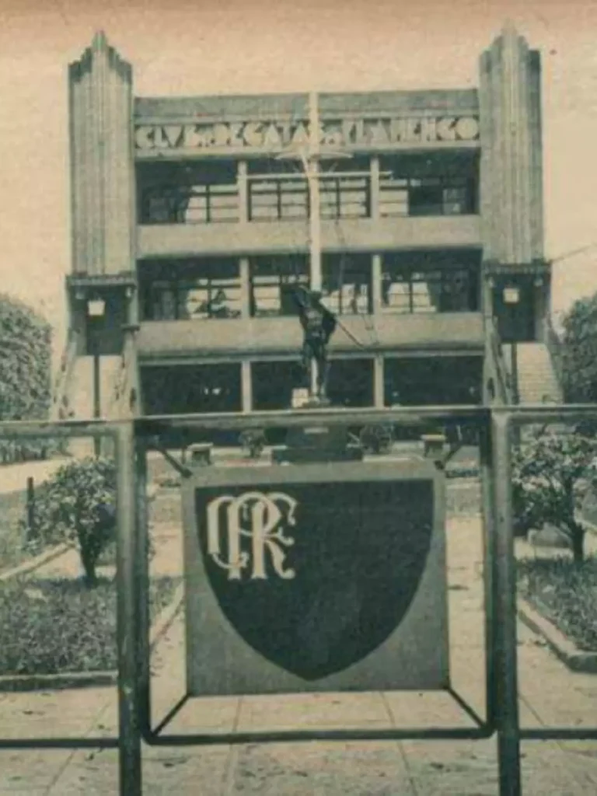

Um clube de remo
O Clube de Regatas do Flamengo foi fundado em 15 de novembro de 1895, no Rio de Janeiro, como um clube dedicado ao remo. O nome vem do bairro do Flamengo, onde o clube surgiu.
O Clube de Regatas do Flamengo foi fundado em 15 de novembro de 1895, no Rio de Janeiro, como um clube dedicado ao remo. O nome vem do bairro do Flamengo, onde o clube surgiu.

O departamento de futebol foi criado em 1911, com a chegada de atletas que vinham de outro clube carioca. A partir desse momento, o Flamengo passou a disputar competições de futebol e cresceu em popularidade.
Na década de 1980, uma geração liderada por Zico marcou a história do clube. Em 1981, o Flamengo foi campeão da Copa Libertadores da América e da Copa Intercontinental, uma das conquistas mais lembradas de sua história.
As cores do clube são o vermelho e o preto, que originam o apelido "rubro-negro" e a expressão Nação Rubro-Negra, usada para se referir à torcida.
O mascote do Flamengo é o urubu.
O hino do clube foi composto por Lamartine Babo.
Artur Antunes Coimbra, o Zico, foi revelado nas categorias de base do clube e é considerado o maior ídolo da história do Flamengo. Foi peça central do time dos anos 1980.
Júnior, Leandro e Adílio fizeram parte da geração vitoriosa do início dos anos 1980, ao lado de Zico, e são lembrados pela torcida como grandes nomes daquela época.
Gabriel Barbosa, o Gabigol, marcou os dois gols da vitória por 2 a 1 sobre o River Plate na final da Copa Libertadores de 2019, disputada em Lima, no Peru.
A lista acima não esgota os grandes jogadores do clube. Ela apresenta alguns nomes ligados às conquistas de 1981 e de 2019.
O Flamengo costuma mandar seus jogos de maior público no Maracanã, estádio do Rio de Janeiro inaugurado em 1950.
A sede social do clube fica na Gávea, no Rio de Janeiro. O Centro de Treinamento, conhecido como Ninho do Urubu, é onde o time profissional e as categorias de base treinam.
A torcida do Flamengo é apontada como uma das maiores do Brasil e é chamada de Nação Rubro-Negra.
"O HTML é a linguagem de marcação padrão utilizada para estruturar e dar significado ao conteúdo de uma página na Web."
Frase amplamente ditas pelos professores de front-end nas salas